<main class="article">
<div class="wrap art-grid">
<article>
<nav class="crumbs"><a href="index.html">블로그</a><span>/</span><a href="index.html#blog">정육쇼케이스</a></nav>
<p class="label dark">정육쇼케이스</p>
<h1 class="art-title">정육쇼케이스 중고, 사기 전에 확인할 4가지</h1>
<p class="meta">한성쇼케이스 · 2026.10.27 · 읽는 시간 6분</p>
<figure class="cover">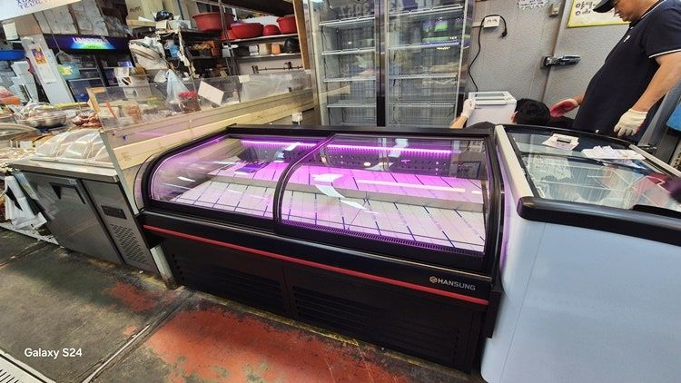</figure>

<div class="answer" data-reveal><b>먼저 답부터</b><p>중고 정육쇼케이스는 <strong>사용 연수, 콤프레셔 상태, 매장 사이즈, A/S 가능 여부</strong> 네 가지가 모두 맞을 때만 이득입니다. 하나라도 확인이 안 되면 수리비와 고기 폐기 비용이 중고 가격 차이보다 커지기 쉽습니다.</p></div>

<p>안녕하세요. 맞춤형 냉장·냉동 쇼케이스를 제작하는 한성쇼케이스입니다.</p>
<p>정육점이나 식육식당 창업을 준비하시는 사장님들께 가장 많이 듣는 질문이 있습니다. "처음이라 예산이 빠듯한데, 중고 정육쇼케이스로 시작해도 괜찮을까요?"</p>
<p>당장 수백만 원을 아낄 수 있으니 중고가 눈에 들어오는 건 당연합니다. 다만 정육쇼케이스는 24시간 쉬지 않고 돌아가는 정육점의 심장이라, 한 번 멈추면 그날 진열한 고기를 통째로 버려야 할 수도 있습니다. 그래서 오늘은 중고 매물을 보러 가기 전에 꼭 확인해야 할 네 가지를 현장 경험을 바탕으로 정리해 보겠습니다.</p>

<h2>1. 사용 연수와 이전 매장</h2>
<p>같은 3년 된 제품이라도 어디서 어떻게 썼는지에 따라 상태가 전혀 다릅니다. 손님이 많은 정육점에서 쓰던 제품은 문을 여닫는 횟수가 많아 패킹과 경첩이 먼저 닳고, 식당 홀에서 쓰던 제품은 주방 열기와 기름때 영향을 받습니다.</p>
<ul class="ticks">
<li>제조 연월이 적힌 명판 사진을 먼저 받아 보세요.</li>
<li>이전에 어떤 업종, 어떤 매장에서 썼는지 물어보세요.</li>
<li>문 패킹이 갈라지거나 들뜬 곳이 없는지 직접 눌러 보세요.</li>
</ul>
<p>판매자가 연식이나 사용처를 정확히 모른다면, 그 자체가 위험 신호입니다.</p>

<h2>2. 콤프레셔와 냉각 방식</h2>
<p>쇼케이스의 수명은 콤프레셔가 정합니다. 매물을 보러 가면 반드시 전원을 켜고, 설정 온도까지 내려가는 데 얼마나 걸리는지, 가동 소리가 일정한지 직접 확인해 보세요. 소리가 끊겼다 이어지기를 반복하거나 진동이 크다면 콤프레셔가 지친 상태일 수 있습니다.</p>
<p>냉각 방식도 중요합니다. 간냉식(간접 냉각)은 팬으로 냉기를 돌려 내부 온도를 일정하게 지키고, 유리에 성에가 끼지 않아 손님 시야를 가리지 않습니다. 직냉식은 구조가 단순하지만 성에가 쌓여 영업 중에 제상을 해야 하는 번거로움이 있습니다. 고기 신선도와 진열 상태를 생각하면 정육쇼케이스는 간냉식을 권해 드립니다.</p>
<div class="pair" data-reveal>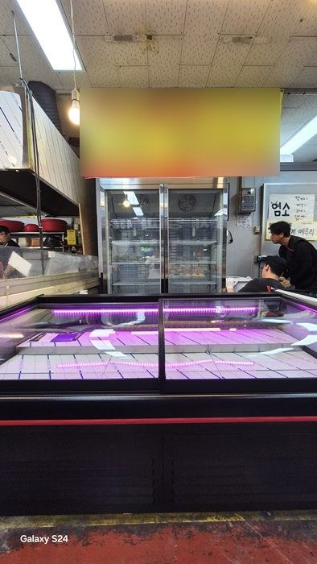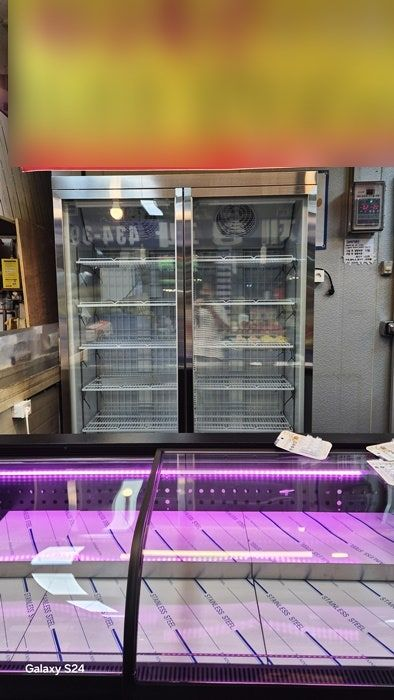</div>

<h2>3. 우리 매장 사이즈와 동선</h2>
<p>중고 매물은 이전 매장에 맞춰 만든 크기입니다. 내 매장 폭과 맞지 않으면 손님 동선이 막히고, 진열 칸이 남거나 모자라게 됩니다. 저울 놓을 자리, 작업대와의 거리, 뒤쪽에서 고기를 채우는 사장님 동선까지 함께 생각해야 합니다.</p>
<ul class="ticks">
<li>쇼케이스가 들어갈 자리의 폭과 깊이를 미리 재 두세요.</li>
<li>출입문 폭과 반입 경로도 꼭 확인하세요.</li>
<li>저울, 포장대 같은 작업 공간이 어디에 붙을지 정해 두세요.</li>
</ul>

<h2>4. A/S가 되는 제품인지</h2>
<p>제조사가 문을 닫았거나 부품이 단종된 제품은 고장 한 번에 통째로 교체해야 할 수 있습니다. 특히 한여름에 냉기가 약해지면 그 피해는 고스란히 사장님께 돌아갑니다. 구매 전에 제조사와 모델명을 확인하고, 해당 제품의 A/S 접수가 가능한지 꼭 전화로 확인해 보세요. 지방에서 창업하신다면 가까운 지역에 A/S 센터가 있는지도 중요합니다.</p>

<div class="check" data-reveal><h3>중고 매물 볼 때 체크리스트</h3><ol>
<li>제조 연월과 이전 사용 매장</li><li>설정 온도까지 내려가는 시간과 소음</li><li>간냉식·직냉식 여부</li><li>매장 실측 폭과 출입문 폭</li><li>제조사·모델명과 A/S 접수 가능 여부</li></ol></div>

<h2>중고 대신 맞춤 제작한 정육 평대 사례</h2>
<p>얼마 전 출고한 정육 평대와 업소용 냉동고 2도어입니다. 사장님께서 처음에는 중고를 알아보셨지만, 매장 폭에 맞는 매물이 없어 맞춤 제작으로 진행하셨습니다. 고기가 더 먹음직스럽고 넓게 보이도록 곡선형 앞문과 핑크 조명을 적용했고, 작업 동선에 맞춰 저울 받침대까지 함께 세팅했습니다.</p>
<figure class="fig" data-reveal>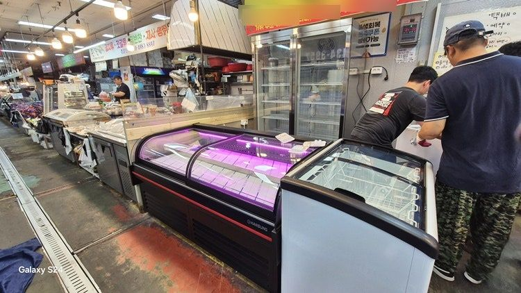<figcaption>정육 평대 쇼케이스 설치 현장</figcaption></figure>
<div class="gallery reveal-group">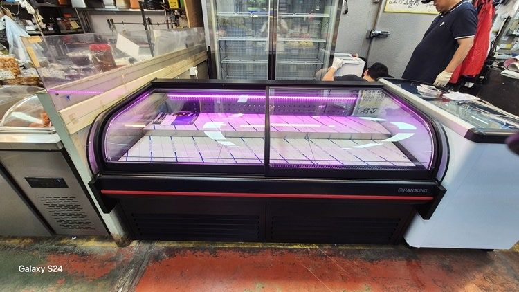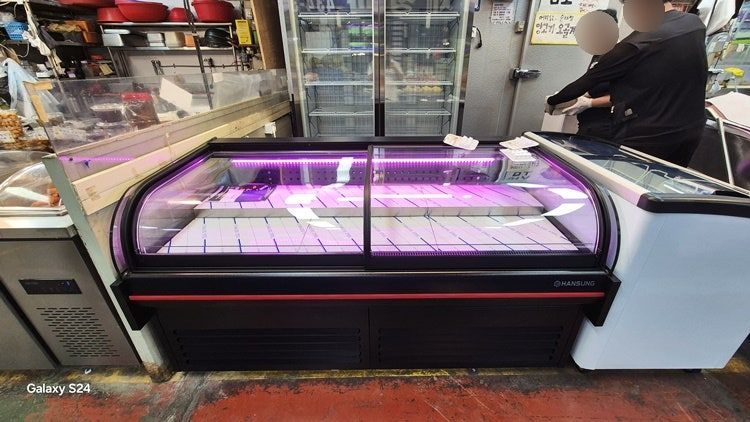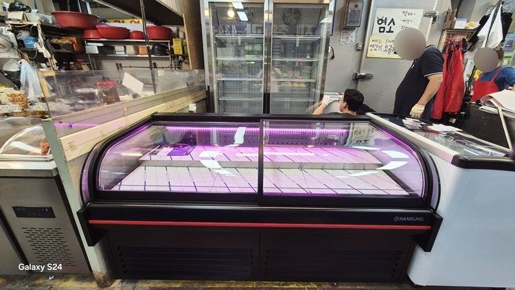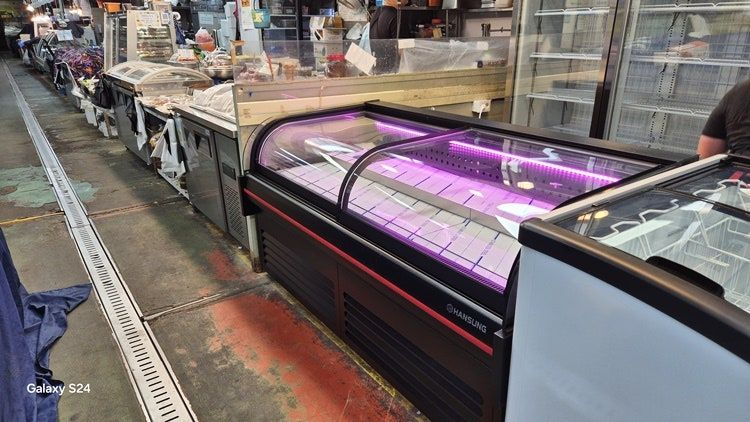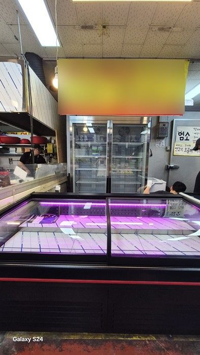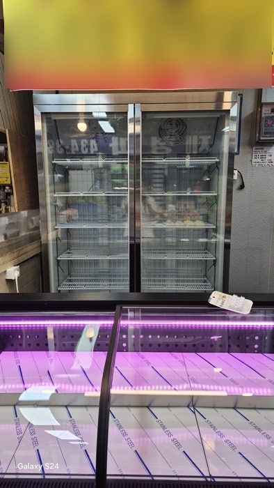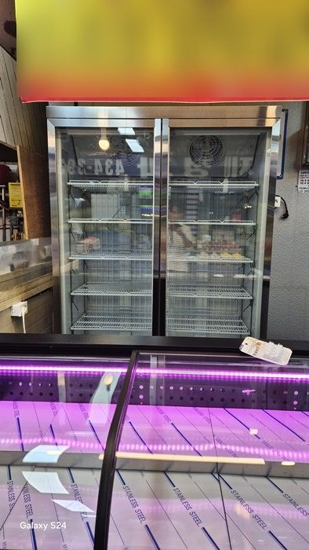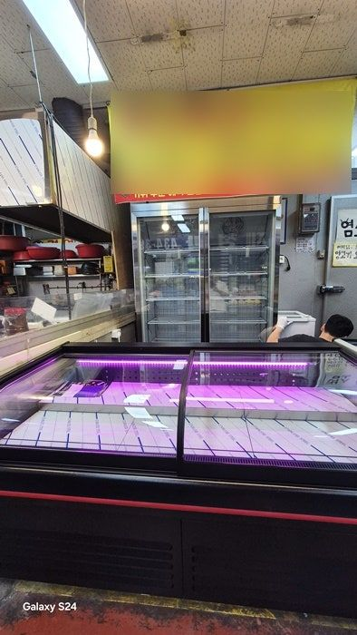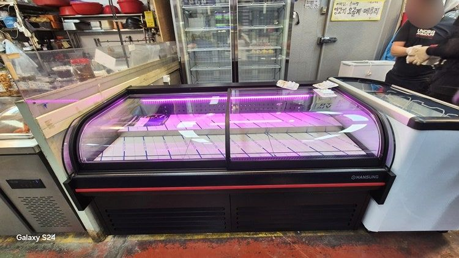</div>
<div class="spec" data-reveal><table>
<thead><tr><th>구분</th><th>정육 평대 쇼케이스</th><th>업소용 냉동고 2도어</th></tr></thead>
<tbody>
<tr><th>규격 (가로×세로×높이)</th><td>1800 × 900 × 900 mm</td><td>1340 × 760 × 2000 mm</td></tr>
<tr><th>디자인·소재</th><td>모던 블랙, 곡선 앞문형</td><td>스텐, 여닫이 2도어</td></tr>
<tr><th>내부 조명</th><td>핑크</td><td>백색</td></tr>
<tr><th>냉각 방식</th><td>간냉식</td><td>간냉식</td></tr>
<tr><th>추가 옵션</th><td>저울 받침대</td><td>내부 선반 10개</td></tr>
</tbody></table></div>

<h2>자주 묻는 질문</h2>
<details class="qa"><summary>매장 구조가 특이한데 사이즈나 내부 단차를 바꿀 수 있나요?</summary><p>가능합니다. 매장 사이즈에 맞춘 규격 변경은 물론, 진열할 상품 크기에 맞춘 내부 단차, 외관 색상, 조명까지 맞춰 제작합니다.</p></details>
<details class="qa"><summary>중고를 사서 수리해 쓰는 것과 새로 맞추는 것, 어느 쪽이 나을까요?</summary><p>연식이 짧고 A/S가 되는 제품이 매장 폭에 딱 맞는다면 중고도 괜찮습니다. 하나라도 어긋난다면 수리비와 폐기 손실을 더해 비교해 보시길 권합니다.</p></details>
<details class="qa"><summary>지방에서 창업하는데 A/S를 받을 수 있나요?</summary><p>한성쇼케이스는 전국 240여 개 A/S 센터를 운영하고 있어 지방에서도 빠르게 대응합니다. 출고 제품은 1년 무상 A/S를 지원합니다.</p></details>

<h2>왜 한성쇼케이스일까요?</h2>
<p>저희는 디자인만 보고 만들지 않습니다. 매일 고기를 채우고 닦는 사장님이 쓰기 편한 구조를 먼저 생각합니다. 원하시는 제품 사진과 설치할 공간 사진만 보내 주셔도 매장에 맞는 구성을 추천해 드립니다.</p>
<ul class="ticks strong">
<li>전국 240여 개 A/S 전담 센터 운영</li>
<li>본사 대량 자재 매입으로 품질 대비 합리적인 가격</li>
<li>유럽제·삼성 냉각 콤프레셔 적용</li>
<li>국내 최초 쇼케이스 전문 디자이너 상주</li>
</ul>

<div class="cta" data-reveal><p>매장 폭과 원하는 진열 구성을 알려 주세요. 실측과 견적을 안내해 드립니다.</p><a class="btn" href="tel:0319862458">031-986-2458</a></div>

<section class="related"><h3>함께 보면 좋은 글</h3><ul>
<li><a href="post.html">정육쇼케이스 가격, 사이즈·사양별로 무엇이 달라지나</a></li>
<li><a href="post.html">정육쇼케이스 간냉식 vs 직냉식 차이</a></li>
<li><a href="post.html">무인정육점 오픈 전 설비 점검 체크리스트</a></li></ul></section>
<p class="tags">정육쇼케이스 중고 · 정육점쇼케이스 중고 · 고기쇼케이스 중고 · 정육평대</p>
</article>
<aside class="toc"><div class="toc-in"><b>목차</b><ol><li>사용 연수와 이전 매장</li><li>콤프레셔와 냉각 방식</li><li>사이즈와 동선</li><li>A/S</li><li>맞춤 제작 사례</li><li>자주 묻는 질문</li></ol>
<a class="btn small" href="tel:0319862458">031-986-2458</a></div></aside>
</div></main>
